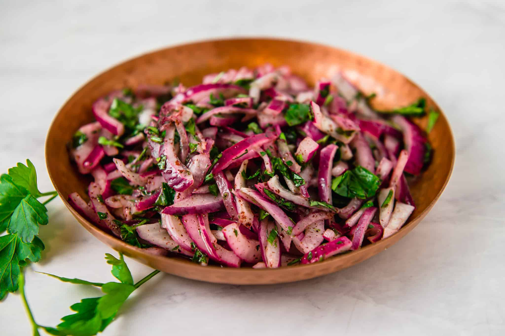

Onion Sumac Salad

Greater than the sum of its parts
This delicious salad is crunchy, tangy and very versatile. The perfect accompaniment to Middle Eastern meat and chicken dishes.
Ingredients
- Red Onion
- Salt
- Sumac
- Parsley
Steps
- Finely slice red onions and roughly chop parsley.
- Massage onions with salt and sumac.
- After 10 minutes mix the parsley and onions together.